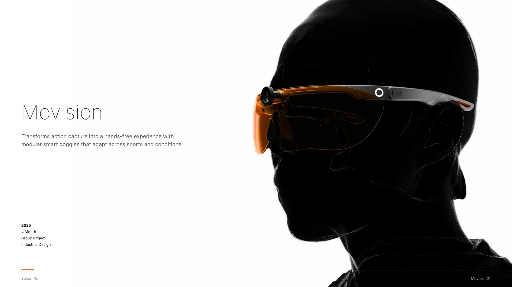
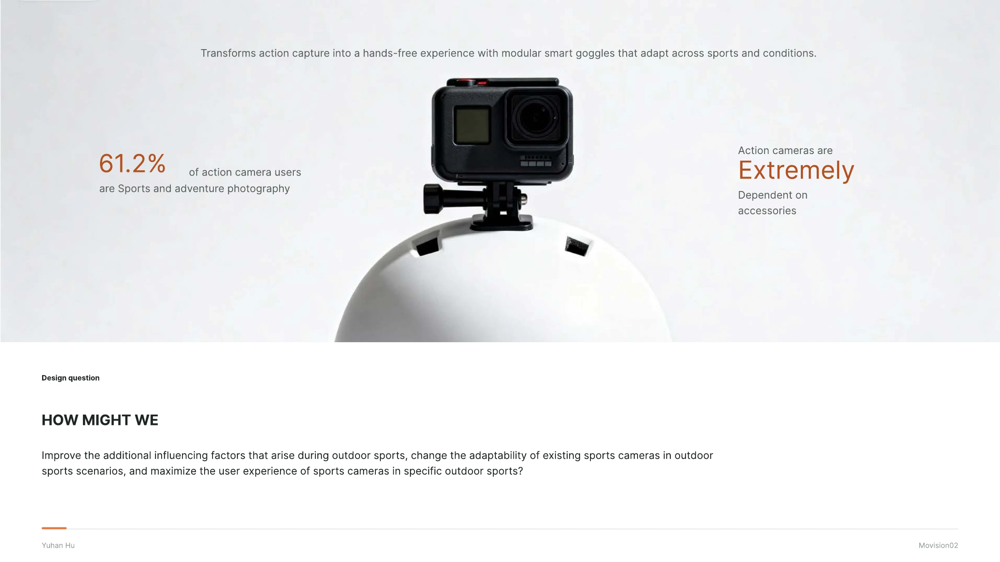
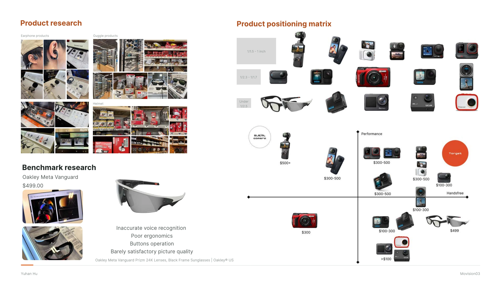
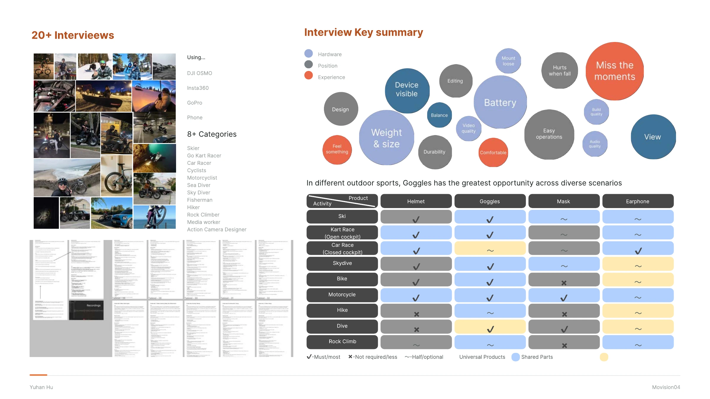
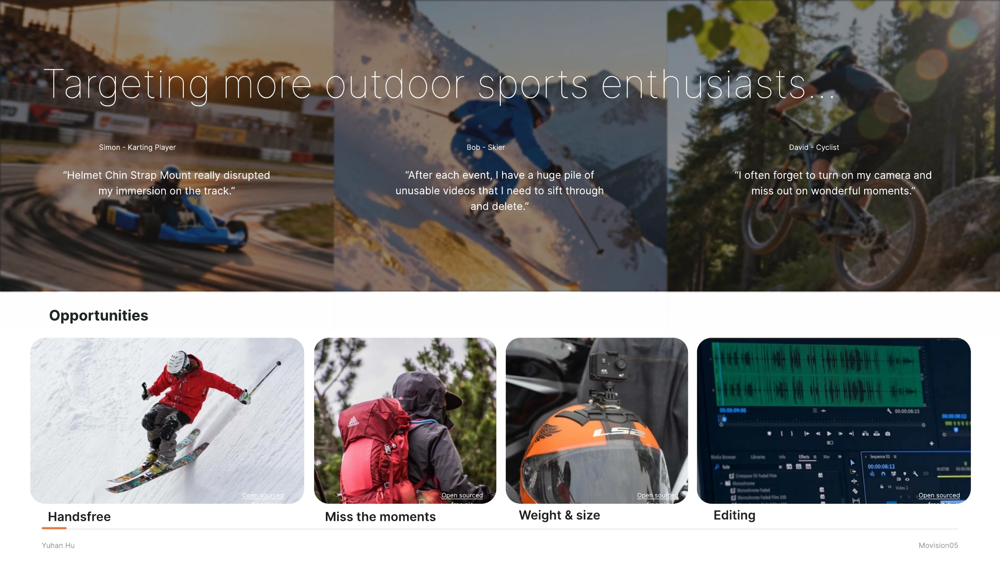
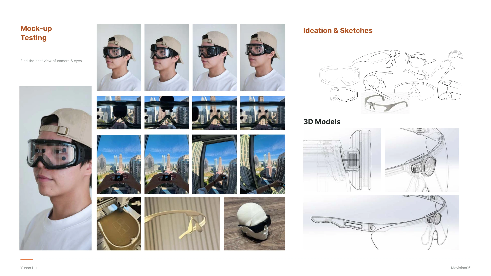
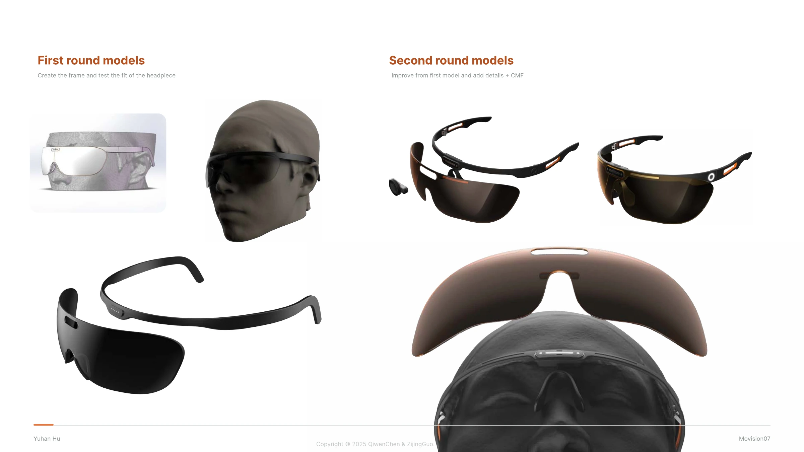
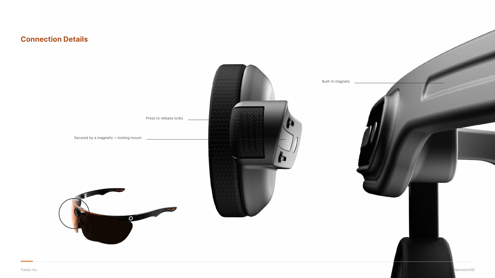
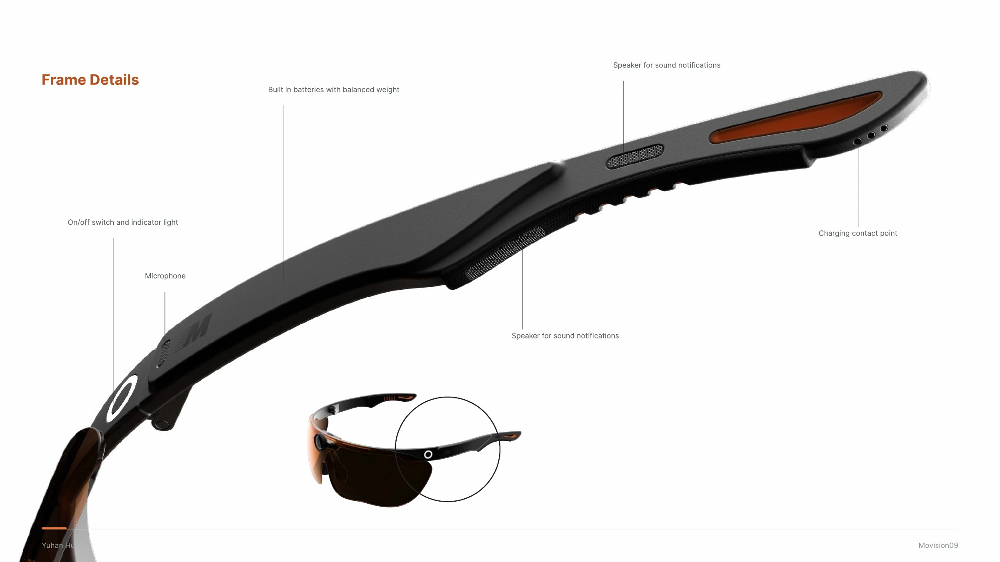
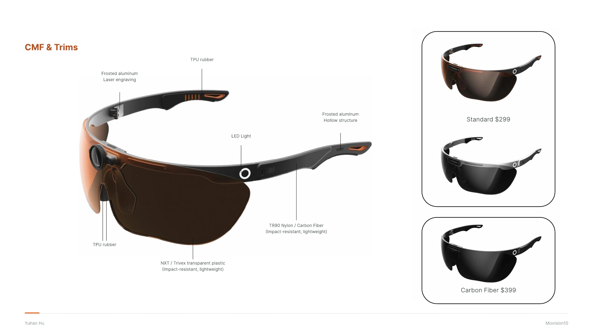

All work
Selected work / 03 · 2025
Movision
Movision integrates action capture into smart goggles that can adapt to different sports. The process explores fit, mounting, controls, and material choices.
View full process








